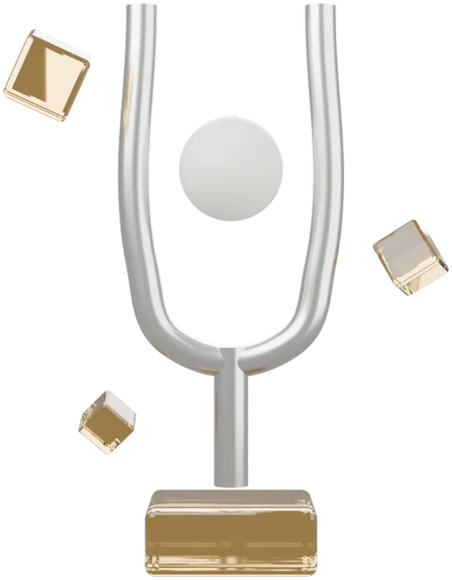

This line started as a marquee behind the object. It slowed down, shrank and settled into the heading, and now the words below arrive one by one as you scroll.

A canvas draws the running line from one strip of text, repeated.
The DOM heading takes over at the moment the two match to the pixel.